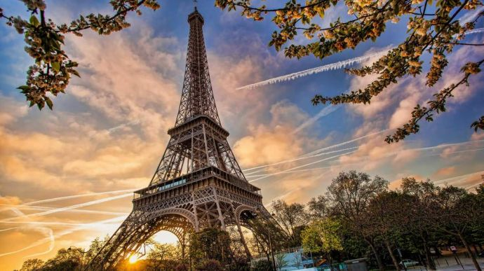

Фра́нція — держава, територія якої складається з метрополії у Західній Європі та низки заморських володінь. Територія метрополії простягається з півдня на північ від Середземного моря до Ла-Маншу та Північного моря, а зі сходу на захід — від Рейну до Атлантичного океану. Межує на північному сході з Бельгією, Люксембургом і Німеччиною, південному заході з Іспанією та Андоррою, на сході з Швейцарією, на південному сході з Італією та Монако. До заморських територій входять Французька Гвіана в Південній Америці та кілька островів в Атлантичному, Тихому та Індійському океанах, серед яких Гваделупа, Сен-Бартелемі, Сен-Мартен, Мартиніка, Майотта, Реюньйон, Сен-П'єр і Мікелон, Нова Каледонія та Волліс і Футуна.
Франція — унітарна змішана республіка зі столицею у місті Париж, найбільшим містом країни і її головним культурним та економічним центром. Іншими основними міськими територіями є Ліон, Марсель, Тулуза, Бордо, Лілль та Ніцца. Франція, включаючи її заморські території, має найбільшу кількість часових поясів серед усіх країн світу, 12.
Під час залізної доби, те, що зараз є метрополією Франції, було заселено галлами, кельтським народом. Рим анексував цю територію у 51 році до н. е., утримуючи її до приходу германських франків у 476 році, які утворили Франкське королівство. Верденський договір 843 року поділив Францію на Східне, Середнє та Західне франкські королівства. Західне королівство, яке стало Королівством Франції у 987 році, було потужною європейською державою середньовіччя при королі Філіпі II Августі. В епоху Відродження процвітала французька культура і було створено глобальну колоніальну імперію, яка до XX століття стала другою за величиною у світі. У XVI столітті, Франція пережила релігійні громадянські війни між католиками та протестантами (гугенотами). У XVII столітті при Людовіку XIV, Франція стала домінівною в Європі культурною, політичною та військовою силою[4]. В кінці XVIII століття Французька революція скинула абсолютну монархію, створивши одну з найстаріших республік у новітній історії та розробивши Декларацію прав людини та громадянина, яка й донині виражає ідеали нації.
У XIX столітті, Наполеон взяв владу і заснував Першу французьку імперію. Його Наполеонівські війни (1803—1815) сформували хід історії континентальної Європи. Після розпаду імперії, Франція пережила бурхливий період зміни урядів, який завершився створенням Третьої Французької Республіки у 1870 році. Франція була важливим учасником Першої світової війни, з якої вона вийшла переможцем, а також була членом антигітлерівської коаліції у Другій світовій війні, однак була окупованою країнами Осі у 1940 році. Після визволення країни у 1944 році, пізніше створена Четверта республіка була розпущена у ході Алжирської війни. П'яту та нині чинну республіку на чолі з Шарлем де Голлем було утворено у 1958 році. Алжир та більшість інших колоній стали незалежними у 1960-х роках, зберігши тісні економічні та військові зв'язки з Францією.
Очільник держави — президент. Президент Франції обирається загальним прямим голосуванням строком на 5 років (до 2002 року — 7 років). Президент обирається абсолютною більшістю голосів. Якщо цієї більшості не набрано в першому турі голосування, проводиться другий тур. На сьогодні Президентом Французької республіки є Емманюель Макрон, обраний на виборах 2017 року.
Франція — найбільш відвідувана країна у світі (за кількістю іноземців, що приїжджають); Париж — найбільш туристичне місто; Ейфелева вежа — найвідвідуваніший у світі монумент: тобто Франція — безперечна чемпіонка світового туризму. Проте дохід від міжнародного туризму значно вищий у США (81,7 млрд дол.), ніж у Франції (42,3 млрд дол.), що пояснюється коротшим перебуванням туристів у Франції: ті хто приїжджають до Європи прагнуть відвідати й сусідні, не менш привабливі країни. До того ж французький турист більше сімейний, ніж діловий, що також пояснює менші витрати туристів у Франції. У 2000 році Францію відвідало близько 75,5 млн туристів — абсолютний рекорд. Зовнішній баланс французького туризму позитивний: у 2000 році дохід від туризму склав 32,78 мільярда євро, тоді як французькі туристи, що подорожували за кордон, витратили тільки 17,53 мільярда євро. Те, що поза сумнівом привертає тих, що приїжджають до Франції — це велика різноманітність пейзажів, довгі лінії океанічного і морського узбережжя, помірний клімат, безліч різних пам'ятників, а також престиж французької культури, кухні та способу життя. Для поїздки у Францію потрібна віза (Шенгенська), що оформляється заздалегідь; або, для громадян України, доступний безвізовий в'їзд за біометричним паспортом. Візу звичайно роблять протягом 2 тижнів, практично завжди необхідно особиста присутність. Короткострокові візи іноді даються відразу — за умови подання повного пакета документів і відсутності перешкод для оформлення. Радять уточнювати список перед здачею документів у будь-яку фірму. Дуже не рекомендовано порушувати терміни перебування — Вас випустять із Франції навіть із простроченою візою, але можуть внести в 'чорний список', і тоді про поїздки в західну Європу можна буде надовго забути.